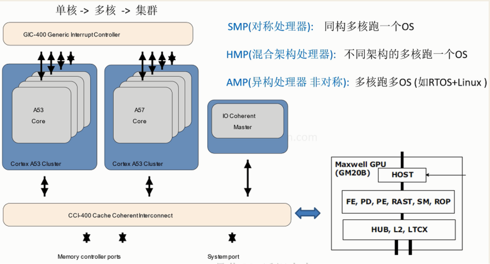
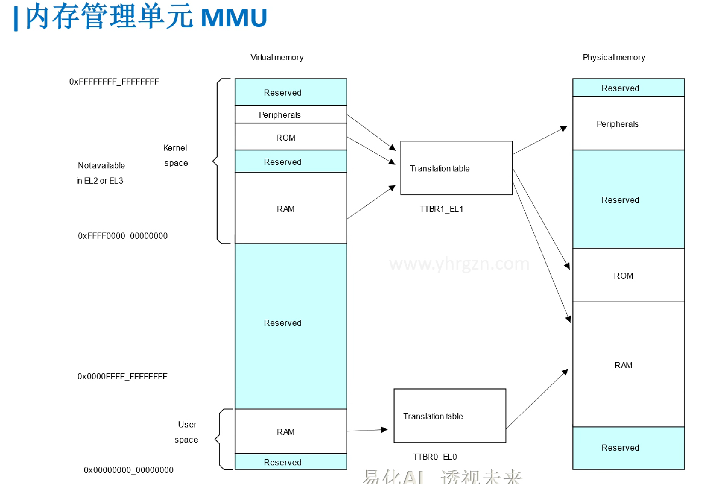
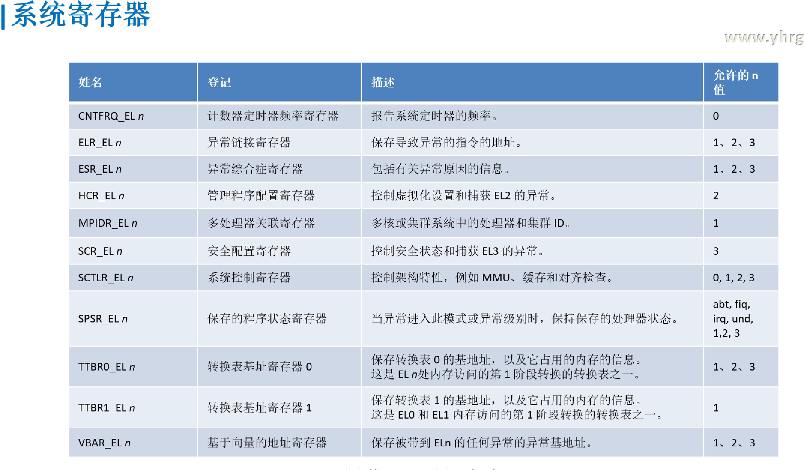
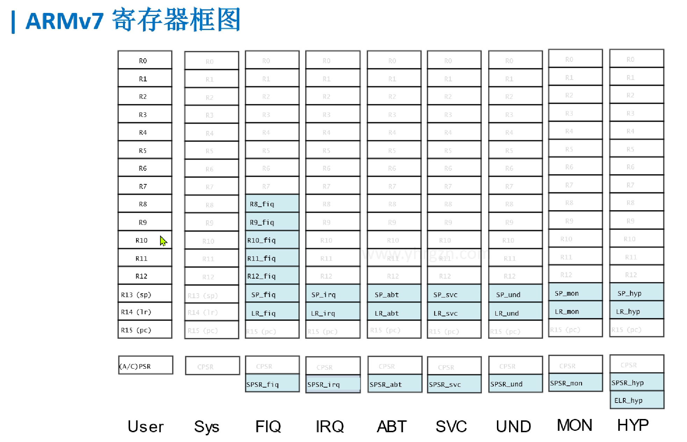
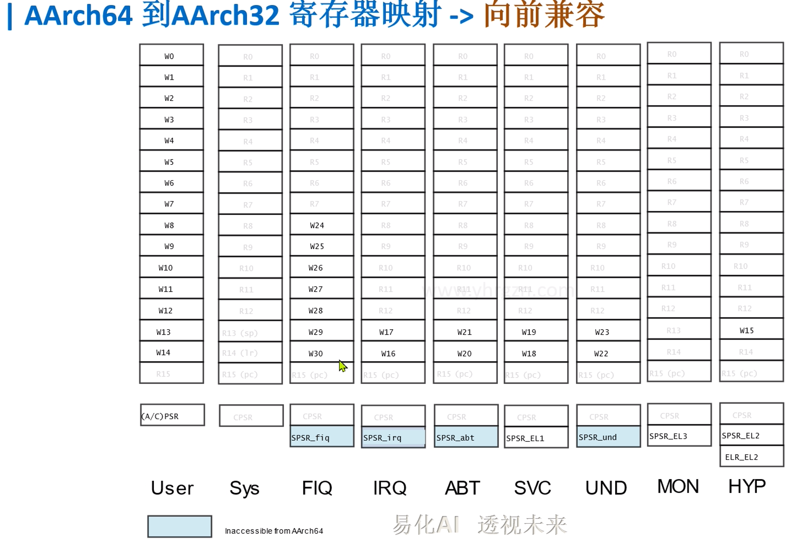
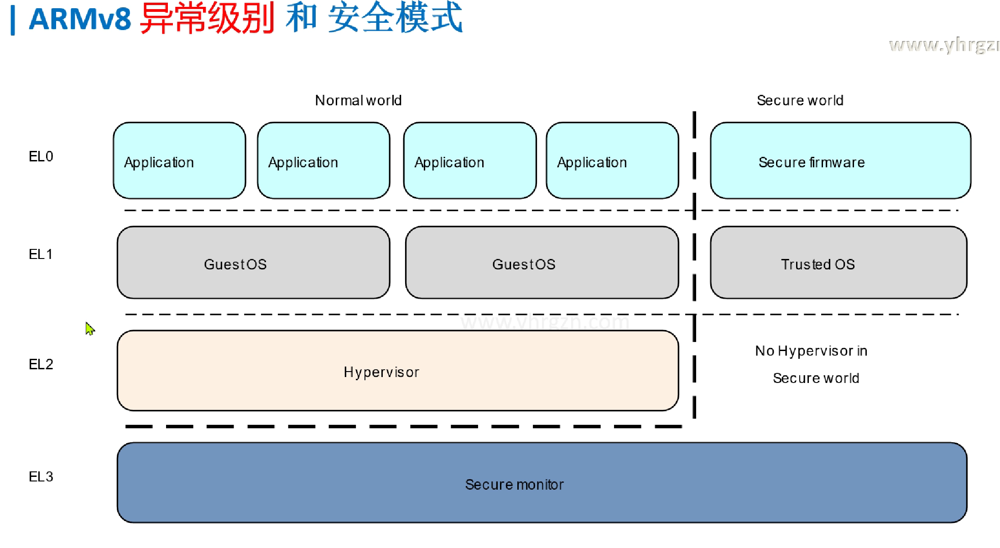

Example
前言
为什么要推出64位汇编?
三大原因
-
应对大内存
大内存(Large Memory): 突破32位机的4G空间限制 -> 硬件越来越强，软件越来越复杂
-
虚拟化
虚拟化(Virtualization): 隔离 高效 -> 虚拟机
-
安全
安全(Security): 物理隔离/硬件隔离 -> 交易支付，隐私数据安全
ARM64位的创新
-
执行状态
AArch64 和 AArch32 两种可切换
- AArch64: 新增A64(ARM 64bit)指令集 -> 大内存(突破4G限制)
- AArch32: 可用以前A32(ARM 32bit)指令集和 T32(Thumb 32bit)指令集 -> 向前兼容
-
异常级别
EL0(应用) < EL1(OS) < EL2(虚拟化) < EL3(安全固件) -> 替代啰嗦的工作模式(User、SVC...)
-
安全模式
分为正常世界 和 安全世界 -> 真正的安全(物理隔离,如支付场景)
多核处理器

通用的CPU+特定领域的芯片（GPU/NPU/TPU/DSP...）
如何协调多核的通信....
内存管理单元MMU

ARMv8 寄存器框图

-
通用寄存器
X/W //X是64位 W是低32位 ARMv7 中使用Bank来减少异常的延迟 //然而使用的寄存器都不到一半 AArch64 执行状态具有 31 × 64 位通用寄存器 //可在所有时间和所有异常级别访问 -
特殊寄存器
XZR //零寄存器: 用作源寄存器时读为零，用作目标寄存器时丢弃结果 SP //堆栈指针 (每个异常级别，独有一个副本SP_ELn) PC //程序计数器 SPSR //发生异常时，存储处理器状态(类似于 ARMv7 中的 CPSR) ELR_EL //异常链接寄存器 保存导致异常的指令的地址 PSTATE //可独立访问的处理器状态的寄存器组 (取代 CPSR的状态字段,将里面的位独立出来,像操作寄存器一样,操作那些状态位,不用与或非等位操作了,避免误操作其他位) NZCV //条件标志 //bit[31:29]: N Z C V //源头：搜索NZCV 在https://developer.arm.com/documentation/ddi0595/2021-09/AArch64-Registers //独立访问: mrs X0, NZCV DAIF //中断屏蔽位(为1时屏蔽) //bit[9:6]: D A I F D(断点观察点) A:SError I(IRQ) F(FIQ) CurrentEL //当前的异常级别 //bit[3:2]: 00(EL0) 01(EL1) 10(EL2) 11(EL3) //独立访问: mrs x1, CurrentEL SPSel //选择堆栈指针的异常级别 //bit[0]: 0(都用SP_EL0) 1(用对应的SP_ELx) -
系统寄存器

寄存器手册 Arm Armv8-A Architecture Registers
SCTLR //系统控制机器： 如MMU、缓存和对齐检查 TTBR0_EL1 //转换表基址寄存器0 -> 物理空间 映射 应用空间 TTBR1_EL1 //转换表基址寄存器1 -> 物理空间 映射 内核空间 MPIDR //多处理器关联寄存器 ICC_SRE_EL3 //中断控制寄存器 ESR_EL //异常综合症寄存器: 包括有关异常原因的信息 HCR_EL //管理程序配置寄存器： 控制虚拟化设置和捕获 EL2 的异常 -
向前兼容(ARMv7以前)


-
异常级别

将以前的7-9个工作模式转化成下面四个异常级别 同时还分安全模式和正常模式:
EL0: 用户/应用层
EL1: 操作系统内核级别
EL2: 虚拟化别的平台, Nvdia上跑别的芯片
EL3: 安全模式/工厂可信任固件
通过系统寄存器操作 SPSR //发生异常时，存储处理器状态(类似于 ARMv7 中的 CPSR)
实验环境搭建
用qemu+ gdb + vscode ---> 实现特权寄存器的访问
ARMv8 汇编指令
b.ne label //不等时跳转
cbz w10, 1f //w10值等于0的适合，跳转导1f
ret //子程序返回指令，返回地址默认保存在LR（X30），代替了mov pc,lr
ldr x0,=__main //大范围的地址读取：把标号__main（地址）读入x0
adr x0,vector //小范围的地址读取：把标号vector（地址）读入x0,标号距当前指令PC的偏移小于1M
stp x29, x30, [sp, #-16]!
//入栈：把x29, x30 存储到sp-16指向的空间后,sp自减16 (因寄存器是8字节，栈是向下生长故是 -16）
//类似前索引： *(sp-16) = x29,x30 sp=sp-16 （!使得sp能自更新） 把 x29,x30看成整体
//stp只支持2个寄存器，代替了复杂的stmfd (64位汇编，取消了批量操作指令)
ldp x29, x30, [sp],#16 //出栈: 把sp指向的空间内容载入到x29, x30后，sp加16
//类似后索引: x29,x30=*sp sp=sp+16
mrs x0, sctlr_el1 //读sctlr_el1内容到x0 (注：系统寄存器，都通过mrs msr来操作)
msr sctlr_el1, x0 //写x0内容到 sctlr_el1
svc #2 //系统调用指令(触发一个同步异常,cpu则会陷入EL1)
.global _start //声明_start 为全局符号(让链接脚本能看到)
.quad 0x3FA0 //在存储器中分配8个字节，初值设为0x3FA0
.align 4 //2^4 =16 字节对齐
.macro myAdd, x,y //宏函数， 类似 myAdd(x, y)
add \x,\x,\y
.endm
myAdd x0,x2
指令集手册 ISA_A64_xml_v88A-2021-09.pdf 注:指令操作码仍然是 32 位长
一个注意的地方。
压栈（stp）：
1. sp 先减 16 → sp=0x0FF0
2. x29 → [0x0FF0], x30 → [0x0FF8]
3. 栈空间占用：0x0FF0~0x1000（共16字节）
出栈（ldp）：
1. 从 [0x0FF0] 读 x29，从 [0x0FF8] 读 x30
2. sp 后加 16 → sp=0x1000（恢复原值）
函数
b.ne lable //不等时跳转到标号
cbz w10, 1f //w10值等于0的适合，跳转导1f
ret //子程序返回指令，返回地址默认保存在LR（X30），代替了mov pc,lr
-
例子：延时函数
.globl _start _start: mov x0,#3 bl delay reset_end: b reset_end delay: ldr x4,=0x03 loop_delay: sub x4,x4,#1 cmp x4,#0 cbz x4,delay_end b.ne loop_delay delay_end: ret
宏函数
.macro myAdd, x,y //宏函数， 类似 myAdd(x, y)
add \x,\x,\y
.endm
myAdd x0,x2
-
例: 宏函数跳转标号:
.macro switch_el, xreg, el1_label mrs \xreg, CurrentEL cmp \xreg, 0x4 b.eq \el1_label .endm .globl _start _start: mov x0, #0x4 switch_el x0, 1f mov x2,#2 reset_end: b reset_end 1: mov x2,#0x30 b reset_end
ARMv8 异常处理
由于自己比较熟悉RISC-V的异常中断，这里借助RISC-V来辅助理解。
ARM64的异常处理机制与RISC-V的设计理念有相似之处，但在具体实现和分类上有显著差异。以下是两者的类比关系和关键区别分析：
1. 异常分类对比
ARM64 异常分类
| ARM64 异常类型 | 触发条件 | 类比 RISC-V 概念 |
|---|---|---|
| 同步异常 | 由当前指令直接触发（如未定义指令、内存访问错误、系统调用等） | 同步异常（非中断型异常） |
| IRQ (普通中断) | 异步触发，普通优先级外设中断（Group 1） | 外部中断（External Interrupt） |
| FIQ (快速中断) | 异步触发，高优先级或安全域中断（Group 0） | 高优先级外部中断（可配置） |
| SError (系统错误) | 异步内存访问错误（如缓存一致性错误、外部总线错误） | 异步异常（如总线错误） |
RISC-V 异常分类
| RISC-V 异常类型 | 触发条件 | 类比 ARM64 概念 |
|---|---|---|
| 同步异常 | 由当前指令触发（如非法指令、缺页异常、环境调用 ecall 等） |
同步异常 |
| 异步异常（中断） | 定时器中断（Timer）、软件中断（Software）、外部中断（External） | IRQ/FIQ/SError |
2. 关键差异分析
(1) 同步 vs. 异步
- ARM64 明确区分同步异常和异步异常：
- 同步异常：与指令执行直接相关，
ESR（Exception Syndrome Register）记录原因，ELR（Exception Link Register）指向触发异常的指令地址。 -
异步异常：IRQ/FIQ/SError，由外部事件触发，
ELR指向被中断指令的下一条指令地址。 -
RISC-V 将异步异常统一称为 中断，同步异常称为 异常。中断通过
mcause寄存器区分类型（Timer/Software/External）。
(2) 中断优先级与分组
- ARM64 引入 FIQ 和 IRQ 两级中断：
- FIQ 优先级高于 IRQ，用于实时性要求高的场景（如安全监控）。
-
中断分组（Group 0/Group 1）支持安全扩展（如 TrustZone）。
-
RISC-V 中断优先级由硬件平台（如 PLIC）配置，架构层面不强制规定优先级。
(3) 异常处理流程
- ARM64：
- 异常触发后，处理器自动保存状态到
SPSR和ELR。 - 跳转到 异常向量表（VBAR_ELx 指定），根据异常类型选择入口。
-
通过
ESR解析具体异常原因。 -
RISC-V：
- 跳转到统一的异常入口（
mtvec指定），通过mcause区分类型。 mepc保存返回地址，mtval记录附加信息（如缺页地址）。
3. 类比示例
场景 1：外部中断
- ARM64：外设触发 IRQ → 跳转到 VBAR_EL1 + 0x280（IRQ 入口） → 读取 GIC 寄存器获取中断号。
- RISC-V：外设触发 External Interrupt → 跳转到
mtvec+ 0x00（中断入口） → 读取 PLIC 寄存器获取中断号。
场景 2：未定义指令
- ARM64：同步异常 → 跳转到 VBAR_EL1 + 0x200（同步异常入口） → 通过
ESR解析为未定义指令。 - RISC-V：同步异常 → 跳转到
mtvec+ 0x00（同步异常入口） → 通过mcause解析为非法指令。
4. 设计哲学差异
- ARM64 更强调 硬件辅助的安全性和实时性（FIQ/Grouping/TrustZone）。
- RISC-V 追求 极简性和可扩展性，将优先级和分组交给软件或具体实现。
总结
- ARM64 同步异常 ≈ RISC-V 同步异常（如
ecall、缺页）。 - ARM64 IRQ/FIQ ≈ RISC-V 外部中断，但 FIQ 有更高优先级和硬件优化。
- ARM64 SError ≈ RISC-V 异步总线错误（需通过自定义中断处理）。
通过理解两者的分类逻辑和硬件行为，可以快速迁移 RISC-V 的异常处理经验到 ARM64 平台，同时注意 ARM64 特有的优先级和分组机制。
异常向量表
adr x0, vectors //读取异常向量表的首地址
msr vbar_el1,x0 //设置异常表的基地址
svc #2 //系统调用(触发同步异常陷入， sp_el不同陷入不同异常)
-
异常向量表的设置与跳转
.globl _start _start: mrs x1,SPSel mrs x2,CurrentEL mov x0,#0 msr SPSel,x0 mov x0, #0x5 adr x0,vectors msr vbar_el1,x0 svc #0x02 //系统调用 ， reset_end: b reset_end do_bad_sync: mov x2,#1 b reset_end do_bad_irq: mov x2,#2 b reset_end .align 11 //2^11=2048 整个异常向量表 2K对齐 -> 通过对齐，实现向量表空间的预留 //16个异常 ，每个异常32条指令 16*32*4=2048 //16个异常，这里使用前8个 vectors: //===============sp0=============== //---同步异常 .align 7 //2^7 1000 0000 =0x80 字节对齐 mov x0,#1 b do_bad_sync //---irq异常 .align 7 //2^7 1000 0000 =0x80 mov x0,#1 b do_bad_irq //---fiq异常 .align 7 mov x0,#1 b reset_end //---SError异常 .align 7 mov x0,#1 b reset_end //===============sp_elx=============== //---同步异常 .align 7 //2^7 1000 0000 =0x80 字节对齐 mov x0,#1 b do_bad_sync //---irq异常 .align 7 //2^7 1000 0000 =0x80 mov x0,#1 b do_bad_irq //---fiq异常 .align 7 mov x0,#1 b reset_end //---SError异常 .align 7 mov x0,#1 b reset_end
基于上面的例子学习：
1. 异常向量表设置
(1) 核心寄存器配置
vbar_el1设置：adr x0, vectors // 获取向量表物理地址（与位置无关） msr vbar_el1, x0 // 将向量表基地址写入 VBAR_EL1- 关键作用：
VBAR_EL1定义了异常发生时处理器的跳转基地址。ARM64 要求向量表必须按 2KB (0x800) 对齐（通过.align 11实现）。
(2) 触发同步异常
svc #0x02指令：- 触发 同步异常（Supervisor Call），处理器切换到
EL1并跳转到vectors表中对应的同步异常入口。 - 跳转逻辑：由于当前处于
EL1且使用SP_EL1，处理器选择 sp_elx 组 的同步异常入口。
2. 异常向量表对齐机制
(1) 整体对齐要求
.align 11：.align 11 // 2^11 = 2048 字节对齐 vectors: // 异常入口定义- ARM64 强制要求异常向量表 首地址必须 2KB 对齐，否则行为未定义。此对齐通过编译器指令
.align 11实现。
(2) 单条异常入口对齐
.align 7：.align 7 // 2^7 = 128 字节对齐（每个异常入口占 128 字节）- 每个异常入口占用 128 字节，16 个入口总大小为 2KB。
- 入口偏移规则： | 异常类型 | 偏移地址 (相对 VBAR_EL1) | | ----------------- | ------------------------ | | 同步异常 (SP0) | 0x000 | | IRQ (SP0) | 0x080 | | FIQ (SP0) | 0x100 | | SError (SP0) | 0x180 | | 同步异常 (SP_ELx) | 0x200 | | ... | ... |
3. 异常处理流程
(1) 同步异常处理（SVC 触发）
- 触发：执行
svc #0x02，引发同步异常。 - 硬件行为：
- 保存当前状态到
SPSR_EL1和ELR_EL1。 - 切换到
EL1并使用SP_EL1。 - 跳转到
vectors + 0x200（SP_ELx 组的同步异常入口）。 - 入口代码：
mov x0, #1 // 占位操作（实际处理中通常读取 ESR_EL1） b do_bad_sync // 跳转到同步异常处理函数 - 处理函数：
do_bad_sync: mov x2, #1 // 标记异常类型（示例） b reset_end // 进入死循环（实际需恢复现场或复位）
(2) IRQ 处理
- 入口地址：
vectors + 0x280（SP_ELx 组 IRQ 入口）。 - 处理逻辑：
mov x0, #1 b do_bad_irq - 实际应用中需读取 GIC 中断控制器 获取中断源。
4. 潜在问题与改进建议
(1) 关键问题
- 未恢复上下文：处理函数
do_bad_sync和do_bad_irq直接进入死循环，未通过eret返回，导致系统挂起。 - 未读取异常原因：未访问
ESR_EL1寄存器解析具体异常原因（如 SVC 调用号）。 - 寄存器污染：
mov x0, #1可能破坏寄存器状态，应在入口保存寄存器（如stp x0, x1, [sp, #-16]!）。
(2) 改进方案
// 示例：完整的同步异常处理
.align 7
sync_handler_spel1:
stp x0, x1, [sp, #-16]! // 保存寄存器
mrs x0, esr_el1 // 读取异常原因
mrs x1, elr_el1 // 获取触发异常的指令地址
bl handle_sync_exception // 跳转到高级处理函数
ldp x0, x1, [sp], #16 // 恢复寄存器
eret // 返回原执行流
(3) 其他优化
- 向量表精简：若仅使用 SP_ELx 组，可删除 SP0 组入口。
- 中断控制器配置：需初始化 GIC 以响应 IRQ/FIQ。
- 安全扩展支持：若使用 TrustZone，需处理 Group 0/Group 1 中断。
5. 与 ARMv8 架构规范的符合性
- 对齐要求：代码满足 2KB 向量表对齐和 128 字节入口对齐，符合规范。
- 入口跳转：直接使用
b指令跳转（而非ldr pc），在 128 字节范围内合法。 - 异常优先级：未体现 FIQ 的高优先级处理，需在 GIC 中配置。
总结
- 代码功能：实现了一个最小化的 ARM64 异常向量表，支持同步异常和 IRQ 的跳转，但缺乏完整的上下文保存与恢复机制。
- 适用场景：适用于裸机调试或教学示例，不适用于生产环境。
- 进阶方向：
- 结合
ESR_EL1解析异常原因。 - 实现寄存器保存/恢复与
eret返回逻辑。 - 扩展中断控制器（GIC）驱动支持实际外设中断。
通过此代码可深入理解 ARM64 异常处理的硬件机制，但实际系统需在此基础上完善上下文管理、中断优先级和错误恢复功能。